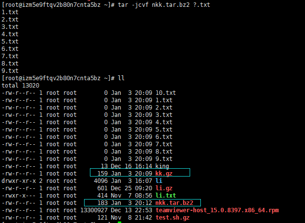

基础掌握：需要自行安装yum install bzip2
压 缩：tar -jcv -f filename.tar.bz2 要被压缩的文件或目录名称
查 询：tar -jtv -f filename.tar.bz2
解压缩：tar -jxv -f filename.tar.bz2 -C 指定欲解压缩的目录

将文件全部打包成 tar 包：
tar -cvf log.tar log2012.log 仅打包，不压缩！【体积将会成两倍大】
tar -zcvf log.tar.gz log2012.log 打包后，以 gzip 压缩
tar -jcvf log.tar.bz2 log2012.log 打包后，以 bzip2 压缩
将 tar 包解压缩：【z的能力没有j的强】
tar -zxvf /opt/soft/test/log.tar.gz
tar -zxvf /opt/soft/test/log30.tar.gz log2013.log【只将 tar 内的部分文件解压出来】
tar -zcvpf log31.tar.gz log2014.log log2015.log log2016.log【文件备份下来，并且保存其权限】
tar -N "2012/11/13" -zcvf log17.tar.gz test【在文件夹当中，比某个日期新的文件才备份：】
tar --exclude scf/service -zcvf scf.tar.gz scf/*【备份文件夹内容是排除部分文件：】
注意tar在压缩时，有覆盖同名称文件的功能

zip【针对文件和目录】
首先将 /etc 目录下的所有文件以及子目录进行压缩，备份压缩包 etc.zip 到 /opt 目录，
然后对 etc.zip 文件进行 gzip 压缩，设置 gzip 的压缩级别为 9。
zip –r /opt/etc.zip /etc
使用unzip解压
unzip【针对文件处理】
gzip -9v /opt/etc.zip
gzip -l /opt/etc.zip.gz【查看压缩情况】
解压上述 etc.zip.gz 文件到当前目录。【gzip是一种在源文件上压缩却不打包的压缩方式】
[root@mylinux ~]#gzip –d /opt/etc.zip.gz
或者执行
[root@mylinux ~]#gunzip /opt/etc.zip.gz
若果压缩的时纯文本文件的话，可以在不解压的情况使用zcat查看
bzip2
压缩指定文件 filename:
bzip2 filename
或
bzip2 -z filename
解压指定的文件 filename.bz2:
bzip2 -d filename.bz2
或
bunzip2 filename.bz2
参数的说明;
-c | 新建打包文件，同 -v 一起使用 查看过程中打包文件名 |
-x | 解决文件， -C 解压到对应的文件目录。 |
-f | 后面接要处理的文件 |
-j | 通过bzip2方式压缩或解压，最后以.tar.br2 为后缀。压缩后大小小于.tar.gz |
-z | 通过gzip方式压缩或解压，最后以.tar.gz 为后缀 |
-v | 压缩或解压过程中，显示出来过程 |
-t | 查看打包文件中内容，重点文件名 |
-u | 更新压缩文件中的内容 |